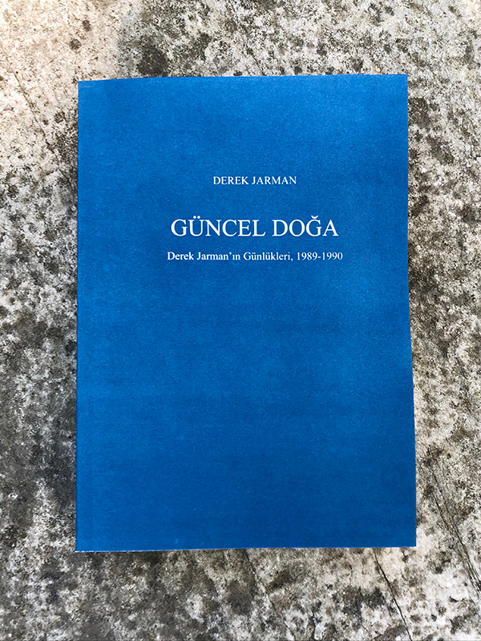
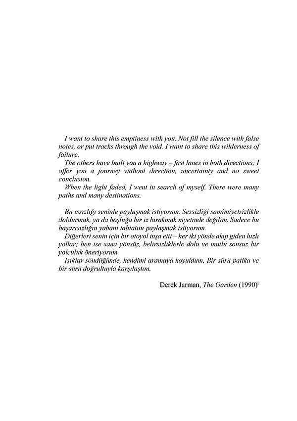
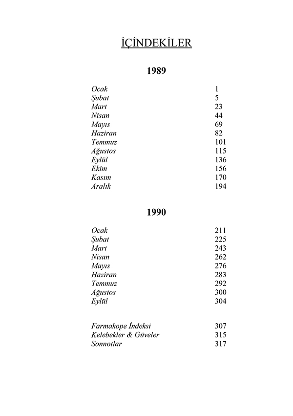
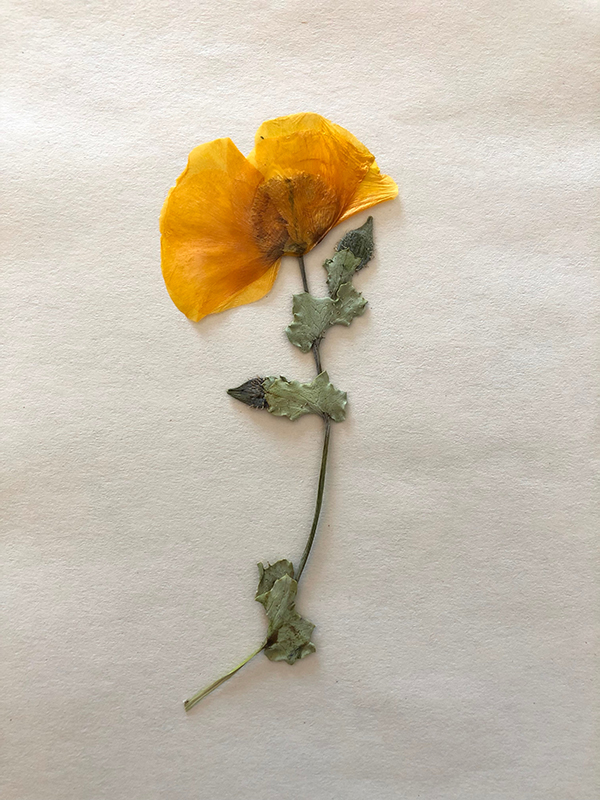
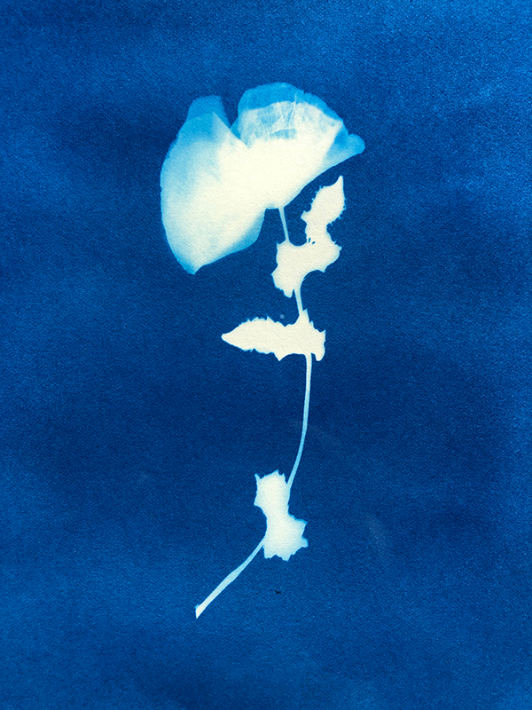
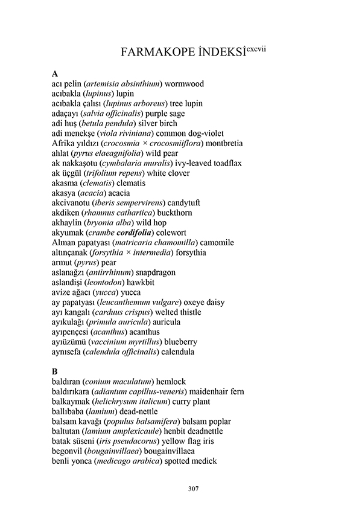
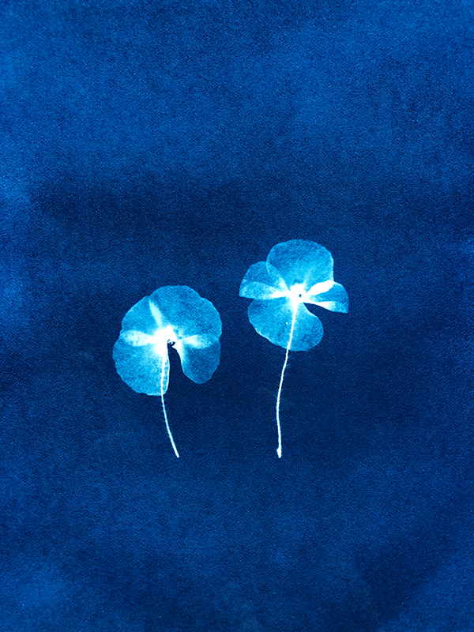
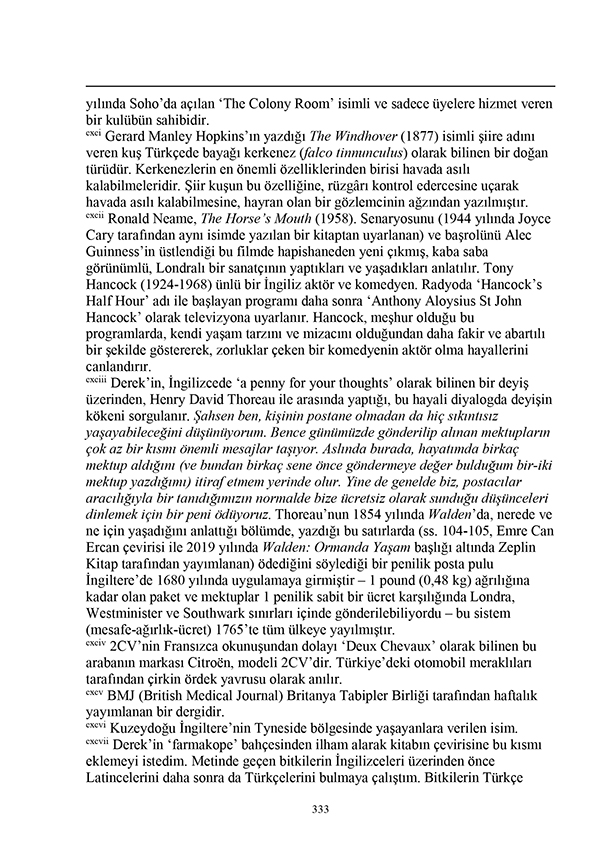

Modern Nature / Güncel Doğa
2022My version of Derek Jarman’s diaries, Modern Nature / Güncel Doğa, is an unpublished Turkish translation, produced as four artist’s copies, each bound in a handmade cyanotype cover. Conceived as a gift for a close friend, the volume departs from the original through the inclusion of a quotation from The Garden (1990), a translator’s dedication, a letter to its recipient, two loose horse chestnuts, a pharmacopoeia indexing every plant, butterfly and moth mentioned in the diaries, and cyanotype inserts made from pressed flowers collected over the years.







